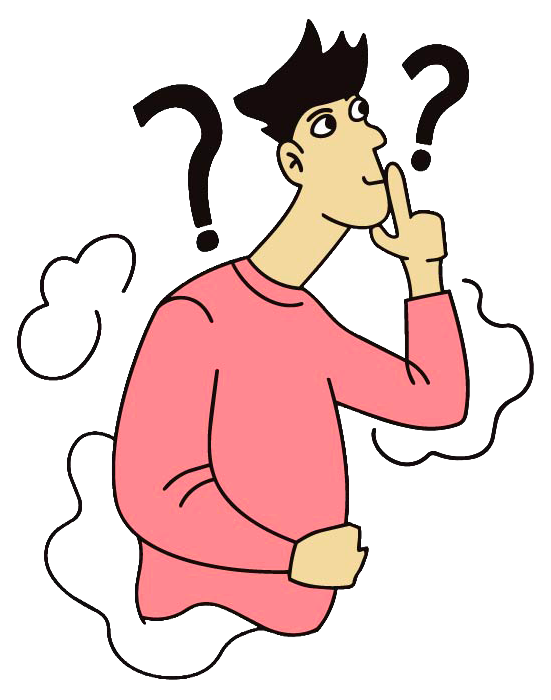
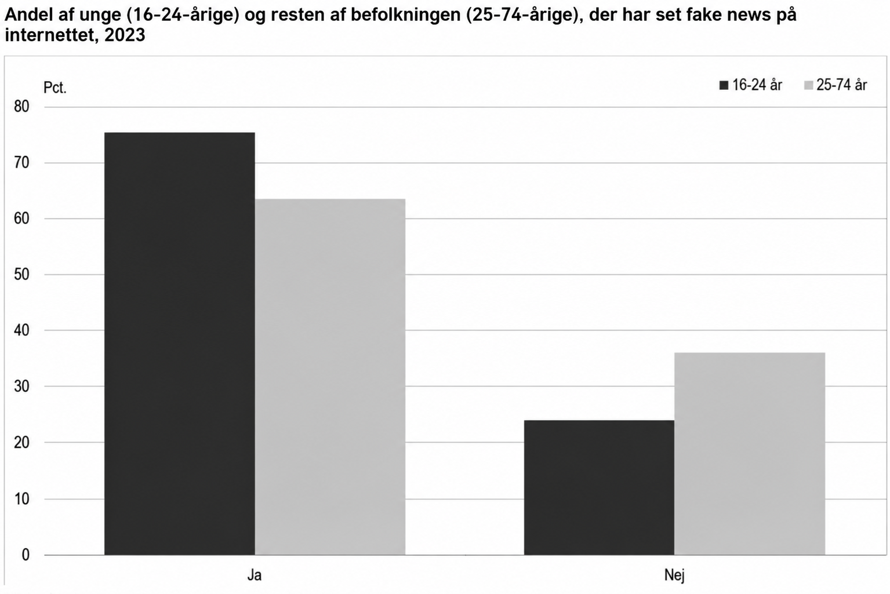
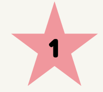
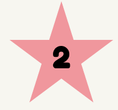
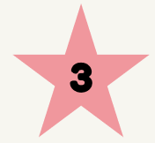
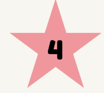
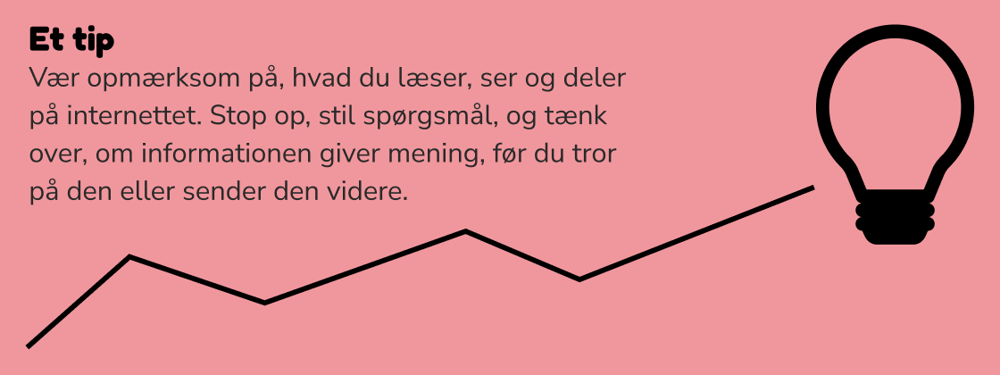

Kritisk tænkning
Vær kritisk over for det, du ser online
Hver dag møder vi nyheder, opslag og videoer på internettet. Men kan vi altid stole på det, vi ser? Kritisk tænkning handler om at undersøge information, før vi tror på den. Nogle oplysninger kan være falske eller misvisende. Derfor er det vigtigt at tjekke, hvem der står bag, og om kilden er troværdig, før vi deler noget med andre.



Hvorfor er kritisk tænkning vigtigt?
Når vi bruger internettet, kan vi ikke altid regne med, at alt det, vi læser, er rigtigt. Nogle hjemmesider deler falske oplysninger eller prøver at påvirke vores holdninger. Derfor er det vigtigt at tænke sig om og undersøge informationen, før man tror på den eller deler den med andre.

Falske nyheder
Det er information, som bliver delt, selvom den ikke nødvendigvis er sand. Det kan for eksempel være falske historier på Facebook, TikTok eller andre sociale medier. Fake nyheder kan få folk til at tro på noget, der ikke passer, og derfor er det vigtigt at være opmærksom.
Er denne nyhed sandt eller falsk?
Kong Frederik blev set vifte med et palæstinensisk flag
I maj 2024 spredte en video sig på sociale medier, hvor folk påstod, at kong Frederik viftede med et palæstinensisk flag i Sverige.
Tror du, historien er sand eller falsk?
Se svaret
Svaret det er falsk.
Det var ikke kong Frederik på videoen, men en anden mand i Sverige.
Husk: Undersøg altid, om det du ser på nettet, er sandt.

Tjek kilden
Før du tror på noget, du læser på nettet, skal du undersøge, hvem der har skrevet det. Tjek, om det er en troværdig hjemmeside eller en person, du ikke kender. Se også, om informationen er ny og opdateret. Det er en god idé at sammenligne med andre hjemmesider for at se, om de skriver det samme.

Undersøg flere perspektiver
Når du søger information på nettet, er det vigtigt at se en sag fra flere sider. Forskellige personer kan have forskellige meninger og oplevelser med det samme emne. Undersøg derfor flere synspunkter og sammenlign dem, så du bedre kan forstå emnet og danne din egen mening.
